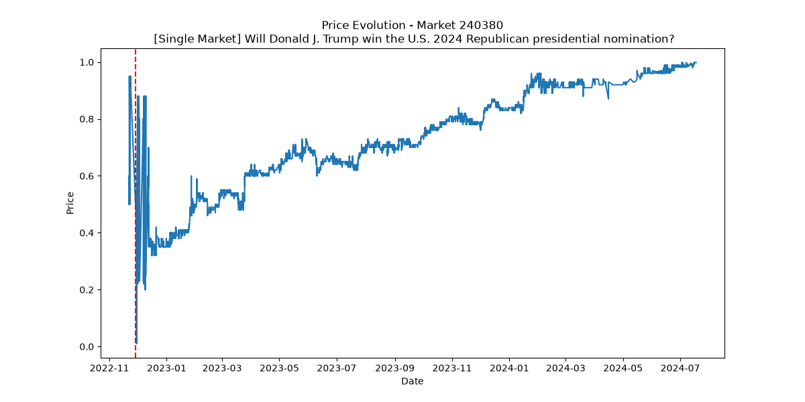

Problem Formulation
paragraph1
paragraph 2
Ethics
Donald Trump is a public figure, and therefore there are no privacy concerns regarding the use of his publicly available posts. This project does not use any data from individual users on Polymarket. Although the quantitative market data contains information about buyers and sellers, these are represented only by UUIDs and are not personally identifiable.
paragraph 2
Data Collection and Wrangling
We downloaded our Polymarket data from the following publicly available dataset:
Polymarket dataset on Hugging Face
.
Example entries from the markets.parquet dataset:
paragraph 2
Analysis
paragraph1
This is a paragraph
Results
Visualization and Dissemination
This is a paragraph

Limitations
paragraph1
paragraph 2